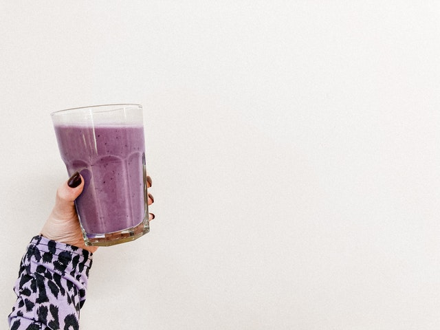

Everyday Smoothie

Descrtiption
This is a jack-of-all-trades smoothie. It can be eaten as a meal--breakfast, lunch, or dinner. It can be eaten for post-workout nutrition and replenishment. It can even be eaten as a snack, if made in smaller quantities. Use it to best suit your needs. I eat it most often as a post-workout 'meal' or as a late breakfast/brunch on the weekends
Ingredients
- 1 banana
- 1 cup fresh spinach, packed
- 1 1/2 cups skim milk (substitute soy milk for dairy-free, or any other alt milk with good protein content)
- 1/4 cup (4 tbsp) peanut butter
- 1 cup frozen blueberries
- 1/2 cup frozen strawberries
- Ice, to preference
Steps
- The first thing you need is a blender. I love a Vitamix, and they produce awesome smoothies. They're also quite expensive and not strictly necessary. Any working blender will do. Though you'll get better results with a Vitamix.
- Place the ingredients into the blender in the following order:
- banana
- spinach
- skim milk
- peanut butter
- frozen berries and ice (if using)
- Blend on a low speed (3 works well) for 10 seconds
- Increase the speed to 8 and blend for an additional 45 seconds
- Enjoy!